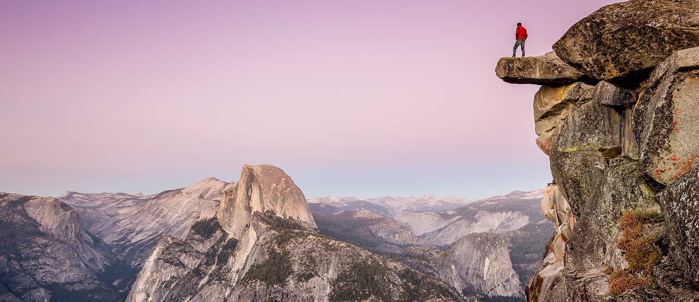
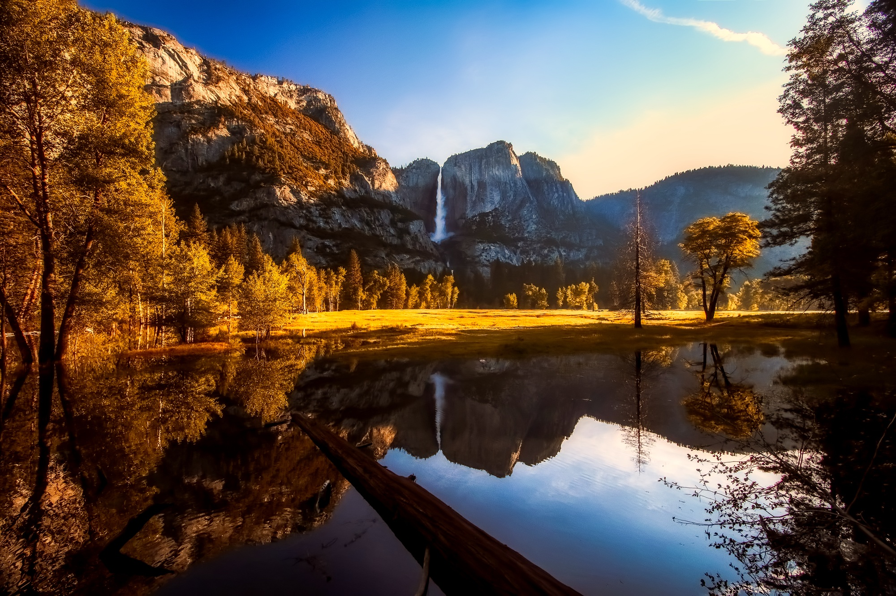

La formación geológica del área es de rocas de granito y remanentes de rocas más antiguas.
Hace aproximadamente 10 millones de años, Sierra Nevada sufrió una elevación y luego fue inclinada hasta formar las laderas relativamente suaves del oeste y las laderas más pronunciadas del este.
La elevación acentuó el grado de inclinación de los ríos y arroyos, formando cañones angostos y profundos.
Durante un millón de años, la nieve y el hielo se acumularon formando glaciares en los prados alpinos más elevados y movieron hacia abajo los valles de los ríos.
El movimiento descendente de la masa de hielo cortó y esculpió el valle en forma de U que atrae hoy en día a gran cantidad de visitantes por su particular paisaje.
Para obtener información externa del Parque pulse el siguiente enlace: Yosemite